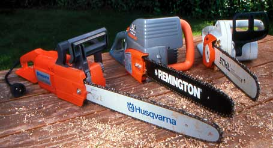

There are many reasons to buy an electric chain saw: They emit noexhaust, they are almost maintenance-free, they weigh less and theyalways start with just a flick of a switch. Unfortunately, one ofthe drawbacks is their electric cord. In addition to lugging thecord around, cord pliability is dramatically reduced intemperatures below 40 degrees.
It's also important to use the correct gauge of cord becausemaximum cord length is dictated by a saw's amperage rating. Mostoutdoor circuits are 15-amp, and cords lose amperage the longerthey run from the source. Under load, saw motors overheat unlessthe cord is of sufficient gauge and shortness to maintainsufficient amperage. Saws rate in the 7- to 12-amp range can workat distances up to 150 feet, with a specified cord. But some sawsrated 15 amps or higher need a gauge of 12 for just 50 feet.
Double check that the length and gauge of your cord meets yoursaw's requirements. Outdoor-rated cords are round-jacketed andstamped with a suffix of 'W' or 'W-A,' for Wet or Wet-Applications,as in SJTW or SJTW-A.
|
 |
|
|